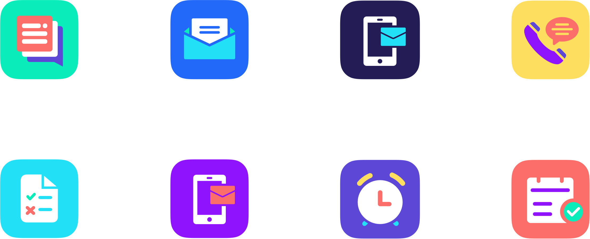

Designing a product marketplace and setting up the design system
Whispir Marketplace
The Whispir Marketplace is a storefront where customers can purchase off the shelf, turn-key communication apps. My task was to develop a visual identity for Whispir’s new Marketplace product which would house and sell these ‘apps’. This included designing the marketing landing pages and a storefront for the product itself.
Sector
Product
Services
- UX and UI
- Art Direction
- Website Design
- Project Management

Developing the visual identity
I kicked off the groundwork by conducting a competitor analysis and gathering inspiration from other product landing page layouts, colour palettes, illustration styles, and brand identities. This discovery work was then compiled into a number of boards in Milanote and from there I could identify some patterns emerging.
Generally, the layout for other marketplace landing pages was quite similar, they were all quite minimal in style and colour, had their apps laid out in some form of a grid and most had a system to filter said apps, with ‘top rated’ or ‘suggested’ living at the top of the page. Some also had a list of features and product visuals.
Despite the minimal look and feel of most of the competitor sites, we wanted to inject a bit more personality into our marketplace environment. I wanted to achieve this by introducing a vibrant colour palette, along with illustrations that would help visually communicate the messaging on the site and bring everything to life a bit more.
The pattern library foundational elements; Colour palette, typography and iconography.
Creating the pattern library
The first step of the process was to build out a ‘Master pattern library’ in Sketch, the application in which all our design files are being produced. This is the source of truth when it comes to housing and updating our design components.
It was important to organise the file architecture in Sketch according to the structure we intended to use across the board, for both our design files and React applications.

Creating the design system and introducing Atomic Design
I decided to use the principles of Brad Frost’s ‘Atomic Design Methodology’ as a guide to build out the Marketplace Design System. Atomic Design is the concept of breaking down user interfaces into smaller, simpler elements. There are five different levels in atomic design: atoms, molecules, organisms, templates, and pages.
These are the principles that the beta Whispir platform already follows so it made the most sense for me to keep things consistent across the Whispir products and use a language that the whole product team were already familiar with.
Not only does this methodology work well for building out components in Sketch and translating it into a Design System in inVision’s DSM, but it also translates quite seamlessly when architecting our React applications in Storybook.
Concepts for the drawer naviation in dark mode and light mode
Once I set up the master pattern library, it was time to migrate the elements into a central, web-based location. After doing some research on the options available, I decided to go with inVision’s Design System Manager (DSM).
The DSM platform includes a Sketch tool, a web view, and a set of APIs—everything a company needs for a powerful design system, including the potential for multiple libraries. It serves as a single source of truth for the design and development teams and is cloud based so can be continuously maintained.

Styling the cards
On both the landing pages and the Whispir Marketplace storefront, the apps sit in a grid format, with the same minimal ‘card’ styling using a palette of light grey and white, yet each has a personality of its own due to its respective icon. These design choices were made because we wanted to make sure it was obvious that the apps were all part of the same marketplace but set them apart just enough to still draw attention to each individually.
Marketplace storefront and marketing landing pages
With any Marketplace Storefront, the primary goal is to convert a sale. The first thing the customer sees is our brand so it essential that it looks good, is easy to use and shows exactly who we are and what we offer. Taking this, along with accessibility into consideration, I ensured that all the page titles and headings were clear, left plenty of white space, used colour to draw attention to key elements on each page and created a recognisable identity.
I used a bold colour palette and human centred illustrations, then to tie the Whispir Marketplace sub-brand back in with Whispir I used the company's bespoke typefaces Capisce Display and Motivo (see project case study), which compliment each other nicely.
Early wireframes – fleshing out end to end user journey's around the product, from log in or sign up, to using and app, to updating settings or checking their message reports.
Marketing landing pages were created for an ‘expression of interest’ launch, in order to gauge the customers interest in the initial four apps that were being built for production.
Shown above is the sign-up and validation process through one of the individual 'app' (Bulk SMS) landing pages.
The latest...
Due to the nature of software development and time constraints, the Whispir Marketplace product got scaled back and is now being re-scoped to become a part of the beta platform that is currently in production rather than be its own standalone product. Fortunately, the concept is very similar, however, the designs have had to be edited to align with the visual identity of the whispir beta platform.
Because I ensured that I kept a certain level of consistency between the visual language of the two products throughout the design process, some of the illustrations, buttons and type styles etc were still compatible with just a few simple tweaks to the colour palette.
The store was soft launched in October 2019. You can read about the launch over at Tech Invest Online.